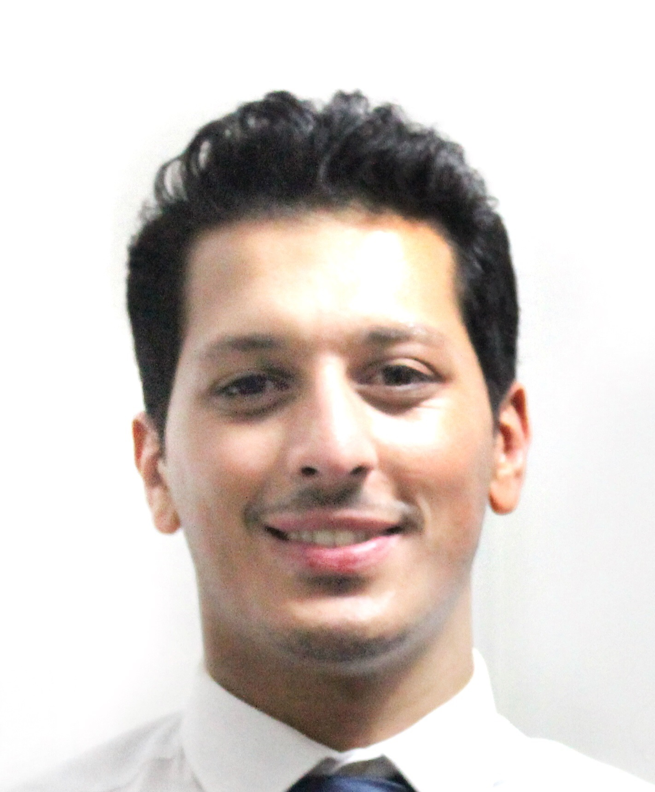

 MELİH YAMAN
PROFESSIONAL SUMMARY
Dedicated test engineer with collaborative teamwork abilities, familiar to various standards, extensive technical
experience in developing test automation tools, developing and conducting experimental tests and evaluate
results, writing reports and procedures/test specifications. Skilled in C#, VBA, LABVIEW and designing
automation tools for tests and work management. Seeking a challenging position with the opportunity to continue
improving technical skills in EMI/EMC.
WORK HISTORY
EMI/EMC Engineer, 04/2019 – Current
ASELSAN – Ankara, Turkey
- Applied and followed EMI/EMC tests in accordance with MIL-STD-461/704, ECSS, CISPR standards.
- Managed and handled EMC laboratory issues such as writing reports/procedure, calibrations, managing
colleagues and technicians etc.
- Designed some applications for related EMC devices, laboratory management and EMC tests by using C# (Windows
Form Applications), Visual Basic (Macros in Excel and Word applications).
R&D Specialist, 09/2014 – 02/2019
VESTEL WHITE GOODS – Manisa, Turkey
- Contributed to design electronic boards and designed electrical structure of the dishwasher machine.
- Tested and validated the power electronics products.
- Managed projects about electronic boards.
- Searched technological solutions for production problems of product and customer desires.
- Made cost down studies.
- Researched and applied patents.
- Had responsibility from prototype to production.
- Worked closely with mechanical design team, manufacturing team and supply chain to bring the product into
mass production
Intern, 01/2014 – 02/2014
NATIONAL INSTRUMENTS INC. – Istanbul, Turkey
- Learned how to use LABVIEW programming software.
- Used NI hardwares for data acquisition, image processing with LABVIEW.
- Worked on myRIO and FPGA by using LABVIEW.
Intern, 01/2014 – 02/2014
MALATYA PROVINCIAL ADMINISTRATION – Malatya, Turkey
- Builded the web sites by using ASP.NET.
SKILLS
- MIL-STD-461/704, ECSS and some other military standards.
- ETSI, CISPR
- C#
- VBA
- JavaScript
- LABVIEW
- MATLAB
- AutoCAD
- Project and team management
EDUCATION
Bachelor of Science: Electrical and Electronic Engineering, 07/2014
Dokuz Eylul University – Izmir
- GPA: 3.1/4
- Top fourth student of class
Contact Me